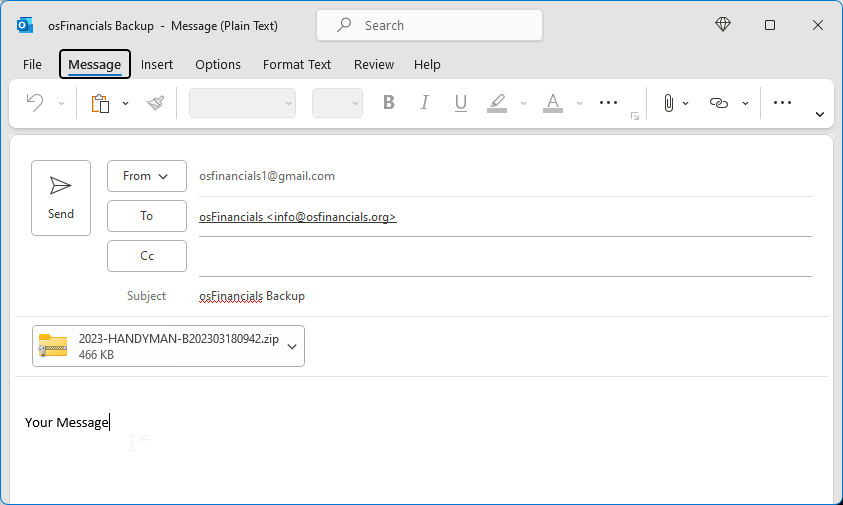

Backup a Set of Books to E-mail
To use the "E-mail backup" option to send a Set of Books to email, you need to ensure that your computer system is properly set up and that you have an active Internet account with your Internet Service Provider.
If you select the "E-mail backup" option on the "Backup Set of Books" screen in osFinancials, a backup file of your Set of Books will be created automatically and attached to your system's default email application.
From there, you can compose an email message, add recipients, and send the email with the backup file attached.
|
|
It's important to ensure that the backup file is securely transmitted and that the recipients are authorized to access the data. You may also want to consider encrypting the backup file or using a secure email service to protect the data during transmission. |

|
|
If your system is not configured for Microsoft Outlook, the following message will be displayed: "You need to create a Microsoft Outlook profile. In Microsoft Windows, go to the Control Panel and open Mail. Click Show Profiles, and then click Add." Click OK and configure Microsoft Outlook. |

|
|
If your system is not configured for Microsoft Outlook, you may create the backup file and attach it to your e-mail message. If you do not have Microsoft Outlook configured on your system, you can still create a backup file and attach it manually to your preferred email application. |
To send a backup file via e-mail:
- Select the "E-mail backup" option on the Backup Set of Books screen.
|
|
You can choose the "Small backup (books)" option to create a backup of your Set of Books database as a single file, such as "books.fdb" for the Firebird database type. However, if you select this option, any images or other files that are linked to your Set of Books will not be included in the backup. This will help to reduce the size of your backup file. |

- When the backup process is finished, your e-mail program will automatically be launched.
- The e-mail address of osFinancials will automatically be entered in this field. Should you wish to change it to a different e-mail address, (e.g. that of your auditor or consultant), you may enter a valid e-mail address to that field. The email address of osFinancials will be automatically added to this field.
|
|
However, if you want to use a different email address, such as that of your auditor or consultant, you can replace the osFinancials email address with the desired email address in the "To" field provided. Just make sure to enter a valid, trusted and correct recipient's email address. |

- Add a description to the subject if you wish (e.g. your company name).
- The file is automatically attached to the e-mail message.
|
|
You can attach additional documents to the email message. However, please note that your Internet Service Provider may have a limit on the size of your email message, including attachments, typically around 1.2MB. If your message exceeds this limit, it may not be delivered to the recipient and instead may be returned to you. |
- Enter your message.
- Click on the Send button.